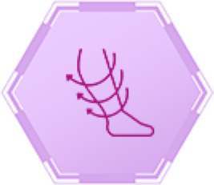
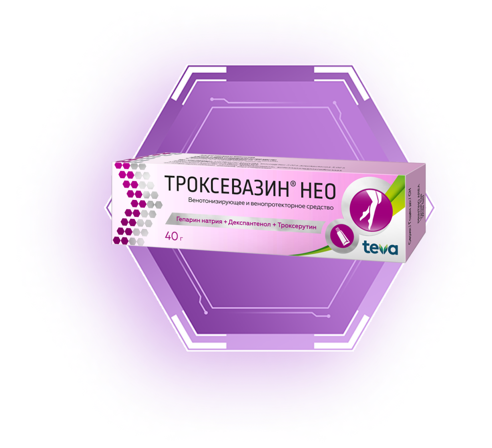

69% взрослых сталкиваются с проявлениями варикоза1
Первые симптомы могут казаться «безобидными». Но если заболевание прогрессирует, к ним прибавляются судороги, отеки, выпирающие вены. А на более тяжелых стадиях и язвы.
Ученые выделяют 7 классов заболеваний варикоза. Вот как они различаются.
При первых же признаках заболевания обратитесь к врачу и получите план лечения, чтобы избежать прогрессирования заболевания.
Факторы риска развития хронических заболеваний вен1
Генетическая предрасположенность
Генетическая предрасположенность
Генетическая предрасположенность
Генетическая предрасположенность
Как бороться с варикозом**
Согласно клиническим рекомендациям1,
важен комплексный подход.
- 
Медикаментозная
терапия -
Компрессионный
трикотаж -
Физкультура
-
Операционное
вмешательство
Не забывайте — программу лечения в каждом конкретном случае назначает врач
Воздействуйте на симптомы изнутри и снаружи
Таблетки Троксактив для направленного действия на вены изнутри4 и Гель Троксевазин® Нео с усиленной2 формулой для воздействия на симптомы варикоза* снаружи3
2. По сравнению с Троксевазин® гель 2 %Троксевазин®
НЕО гель
Препарат следующего поколения —
Троксевазин® Нео с усиленной7 трехкомпонентной формулой8
Троксактив
Таблетки
Самая востребованная формула4 в лечении симптомов
варикоза**
Узнайте больше о варикозе

Симптомы варикоза
Посмотрим на статистику: по данным исследователей, большая часть пациентов до обращения к специалисту по проблемам с венами, флебологу, имела опыт...
Анализы при варикозе
Посмотрим на статистику: по данным исследователей, большая часть пациентов до обращения к специалисту по проблемам с венами, флебологу, имела опыт...
Кратко о варикозе
Посмотрим на статистику: по данным исследователей, большая часть пациентов до обращения к специалисту по проблемам с венами, флебологу, имела опыт...
** При хронической венозной недостаточности
*** При симптомами хронической венозной недостаточности
1. В категории наружных венотоников, по продажам в деньгах 2018-2022, АЙКЬЮВИА
2. Троксевазин® используется в России с 1981 г. РУ Б-8-242 №2654
3. Инструкция по медицинскому применению лекарственного препарата Троксевазин П N012713/02
4. Симптомы хронической венозной недостаточности
5. Гематом.
6. Скидка экономии на гр. по сравнению упаковкой 40г
7. По сравнению с Троксевазин® гель 2 %
8. Инструкция по медицинскому применению лекарственного препарата Троксевазин® Нео ЛП-002139
9. Инструкция по медицинскому применению лекарственного препарата Троксактив ЛП-№ (000726)-(РГ-RU)